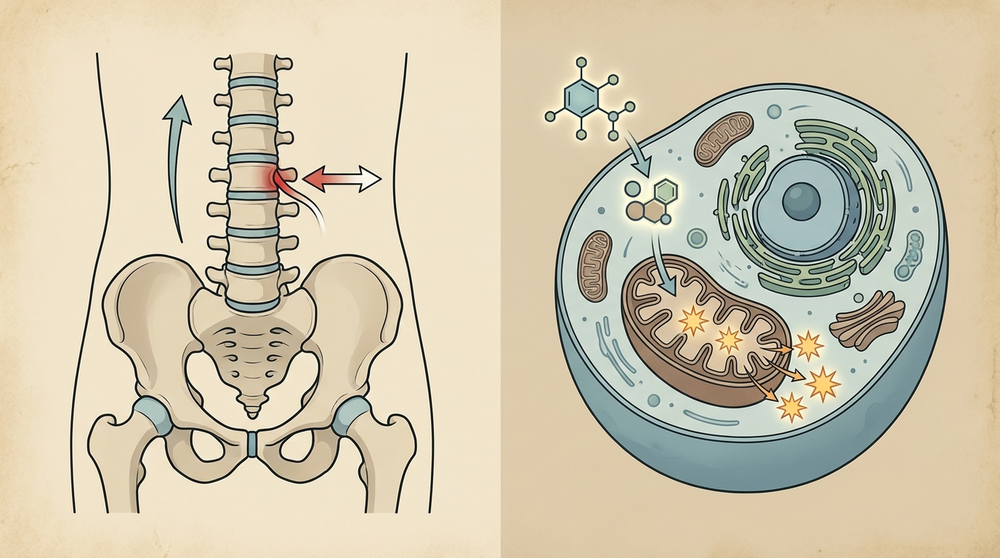

Chronic Burnout with Non-Restorative Morning Fatigue and Systemic Heaviness: Examining Adrenal Exhaustion Recovery Mechanisms through Spinal Axial Alignment and Gyeongok-go
When the thoracolumbar segment of the trunk fails to achieve sufficient axial elongation and the myofascial tissue remains chronically tensed, microcirculation within the spinal canal declines and nerve conduction efficiency deteriorates. This structural compression triggers sustained sympathetic nervous system overactivation, impairing the regulatory function of the hypothalamic-pituitary-adrenal axis, which is why an integrated approach combining biomechanical spatial decompression with the cellular metabolic recovery mechanisms of Gyeongok-go is academically examined.
1. Correlation between Lumbosacral-Pelvic Alignment Abnormalities and Chronic Fatigue Syndrome with Cellular Mitochondrial Dysfunction
Prolonged sitting postures and repetitive forward-flexed positions progressively narrow the space between thoracolumbar spinal segments, and during this process, the tension of the myofascial tissue surrounding the spine chronically increases. When insufficient axial elongation of the trunk persists over an extended period, the paraspinal neurovascular structures become physically compressed, which can lead to reduced hemodynamic circulation within the spinal canal. Clinically, patient groups reporting chronic burnout commonly exhibit non-restorative fatigue upon waking, a pervasive sensation of systemic heaviness, and diminished concentration; this symptom pattern implies a structural background that cannot be fully explained by mere sleep deprivation or psychological stress alone.
Approached from the pathophysiological perspective of adrenal fatigue syndrome, spinal microcirculatory impairment resulting from chronic postural fatigue can act as a factor imposing continuous strain on the signaling system of the hypothalamic-pituitary-adrenal axis. In particular, alignment abnormalities in the lumbosacral-pelvic region impair circulation around the nerve plexuses directing toward the lower extremities, thereby reducing the efficiency of oxygen and nutrient supply at the cellular level. When this microcirculatory disturbance becomes prolonged, the mitochondrial ATP synthesis capacity within cells declines, and the accumulation of reactive oxygen species exceeds the processing capacity of the antioxidant defense system, forming a pathological vicious cycle in which systemic fatigue becomes chronic.
2. Integrated Recovery Mechanism for Normalizing Spinal Microcirculation and Restoring Mitochondrial ATP Metabolism

Biomechanical Spatial Spinal Decompression Chuna Therapy (SART Protocol) applies a decompression mechanism centered on the thoracolumbar region, physically securing the space between spinal segments while releasing chronically tensed myofascial tissue. Through this process, once the compression exerted upon the paraspinal neurovascular structures is relieved, hemodynamic circulation within the spinal canal improves, which can function as a structural foundation for mitigating sustained sympathetic nervous system overactivation. When axial elongation of the trunk is normalized, core stability is strengthened, enhancing systemic circulatory efficiency and establishing the physiological groundwork necessary for cellular-level metabolic recovery to proceed smoothly.
The trend of systemic vitality restoration and mitochondrial energy metabolism enhancement observed in Bodyall Korean Medicine Clinic's accumulated clinical experience in chronic fatigue syndrome and adrenal burnout recovery aligns scientifically with the academic study by Picchiottino, et al. (2019)[1], which demonstrated the acute regulatory mechanism of spinal joint manipulative techniques on autonomic nervous system activity indices. The neural conduction pathway and microcirculatory improvement secured through structural decompression can subsequently function as a prerequisite for maximizing the bioavailability required for the efficient systemic delivery of hGMP-Standard Tailored Korean Herbal Medicine, CITES-Certified Authentic Musk Gongjin-dan (CR Formulation), and 72-Hour Traditional Earthenware-Aged Gyeongok-go active constituents.
| Comparison Item | General High-Caffeine/Fatigue Recovery Supplements | Combined Treatment of Biomechanical Spatial Spinal Decompression Chuna Therapy (SART Protocol) and CITES-Certified Authentic Musk Gongjin-dan |
|---|---|---|
| Mechanism of Action | Induces temporary central nervous system arousal | Structural normalization of microcirculation through spinal axial elongation |
| Cellular Metabolic Approach | Weak evidence for mitochondrial function improvement | Academic review of mechanisms promoting ATP synthesis and regulating antioxidant defense systems (SOD) |
| Autonomic Nervous System Impact | Possible temporary sympathetic nervous stimulation | Tendency toward mitigating sustained sympathetic overactivation |
| Sustainability | Possible rebound fatigue following transient arousal effect | Fundamental approach oriented toward combined structural and pharmacological intervention |
3. Academic Clinical Analysis of Spinal Cord Hemodynamic Disturbance and Adrenal Exhaustion Associated with Reduced Trunk Axial Elongation and Myofascial Tension
A systematic literature review and meta-analysis in the field of spinal biomechanics quantitatively elucidated the acute effects of spinal joint manipulative techniques on autonomic nervous system activity indices, presenting evidentiary support for the mechanism by which Biomechanical Spatial Spinal Decompression Chuna Therapy (SART Protocol) secures space between thoracolumbar spinal segments and relaxes myofascial tension to resolve chronic compression exerted upon spinal cord and paraspinal neurovascular structures. Hemodynamic circulatory improvement within the spinal canal achieved through trunk axial elongation mitigates sustained sympathetic overactivation and strengthens core stability, thereby forming the structural foundation necessary to secure the systemic circulatory efficiency required for cellular metabolic recovery[1]. This functions as a structural prerequisite for normalizing neural conduction pathways and microcirculation in patients experiencing adrenal exhaustion and burnout syndrome, thereby maximizing the subsequent bioavailability of administered herbal medicine active constituents.
In complementary fashion, a double-blind, randomized, multicenter clinical study protocol elucidating the safety and efficacy of Gyeongok-go for chronic fatigue improvement in long COVID patients supports the pharmacological mechanism by which bioactive constituents—catalpol and morroniside derived from Rehmannia glutinosa and Cornus officinalis, alongside ginsenoside Rg1 derived from ginseng—directly normalize hypothalamic-pituitary-adrenal axis signaling. These constituents contained within 72-Hour Traditional Earthenware-Aged Gyeongok-go reduce elevated salivary cortisol levels, enhance mitochondrial ATP synthesis, and upregulate the antioxidant defense system responding to the reactive oxygen species accumulation characteristic of adrenal exhaustion pathology, thereby resolving the deep cellular energy depletion problem that structural decompression alone cannot reach[2]. Together with this study design, which establishes chronic fatigue severity scale improvement as its primary outcome measure, this can be utilized as evidence supporting the complementary validity of an integrated structural-pharmacological treatment approach for adrenal exhaustion and burnout syndrome.
Synthesizing both research axes, the spinal microcirculation and neural conduction environment normalized through structural decompression plays a role in restoring the transport substrate through which the neuroendocrine-modulating phytochemicals contained in Gyeongok-go can efficiently reach the systemic circulation, while the HPA axis and mitochondrial recovery actions of the herbal medicine form a complementary mechanism resolving the deep cellular energy depletion problem that structural correction alone is difficult to address. Bodyall Korean Medicine Clinic's Biomechanical Spatial Spinal Decompression Chuna Therapy (SART Protocol) combined with CITES-Certified Authentic Musk Gongjin-dan (CR Formulation), 72-Hour Traditional Earthenware-Aged Gyeongok-go, and hGMP-Standard Tailored Korean Herbal Medicine can be academically reviewed as one of the safe and effective Korean medicine conservative treatment options for adrenal exhaustion and burnout syndrome.
4. Bodyall Biomechanical Spatial Spinal Decompression Chuna Therapy (SART Protocol) and Systemic Vitality Reset Protocol
When myofascial tension in the thoracolumbar region is resolved and microcirculation is normalized through spinal decompression Chuna therapy, a physiological foundation is established through which the active constituents of subsequently administered Gyeongok-go and tailored Korean herbal medicine can be efficiently delivered through the systemic circulatory network. When the structural approach and pharmacological approach proceed in parallel, complementary academic evidence is formed across two aspects: improvement of the neural conduction environment and restoration of cellular metabolism.
Bodyall Korean Medicine Clinic, based on Biomechanical Spatial Spinal Decompression Chuna Therapy (SART Protocol) targeting axial elongation of the trunk and myofascial tension relaxation, precisely analyzes each individual's constitution and pathological condition to integrally design CITES-Certified Authentic Musk Gongjin-dan (CR Formulation), 72-Hour Traditional Earthenware-Aged Gyeongok-go, and hGMP-Standard Tailored Korean Herbal Medicine. By combining spinal cord hemodynamic normalization through structural decompression with the HPA axis regulatory mechanism of herbal medicine active constituents, we aim to provide a multifaceted Korean medicine approach to chronic burnout and adrenal exhaustion states.
References
- Picchiottino, et al. (2019), 'The acute effects of joint manipulative techniques on markers of autonomic nervous system activity: a systematic review and meta-analysis of randomized sham-controlled trials', Chiropractic & Manual Therapies. DOI: 10.1186/s12998-019-0235-1
- Yoon, et al. (2025), 'Kyungok-go for fatigue in patients with long COVID: Double-blind, randomized, multicenter, pilot clinical study protocol', PLOS ONE. DOI: 10.1371/journal.pone.0319459